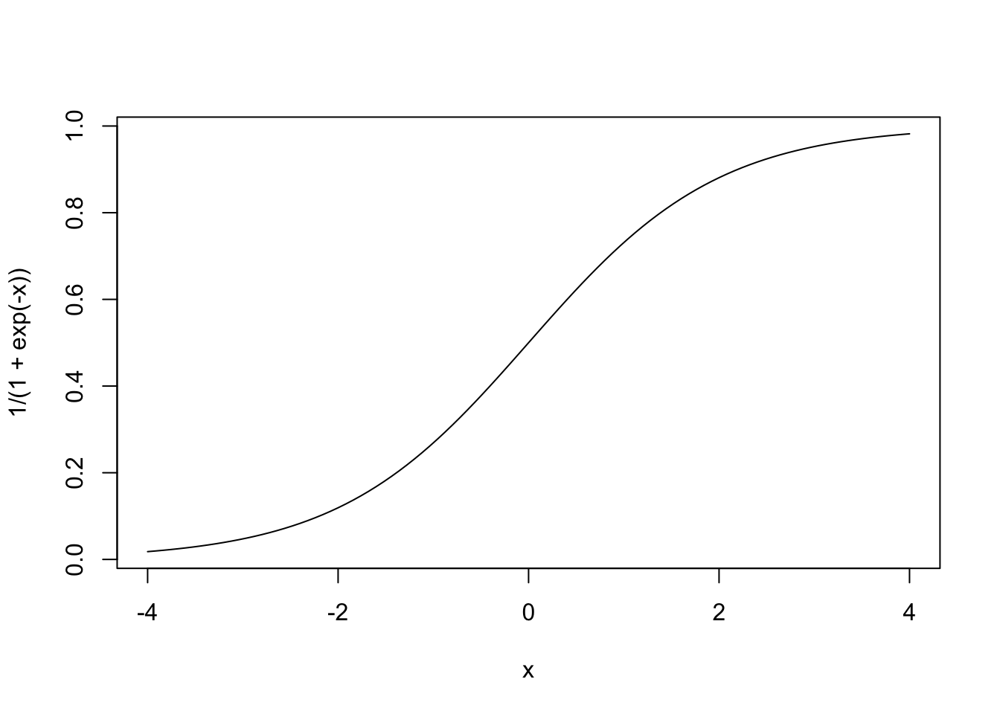
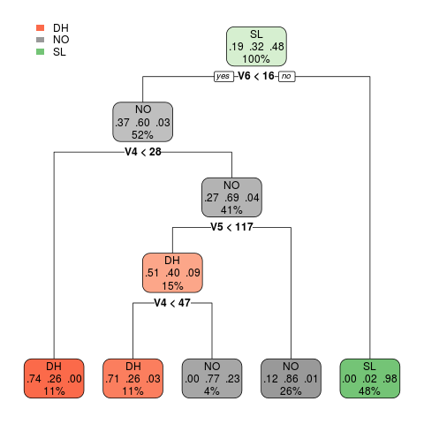
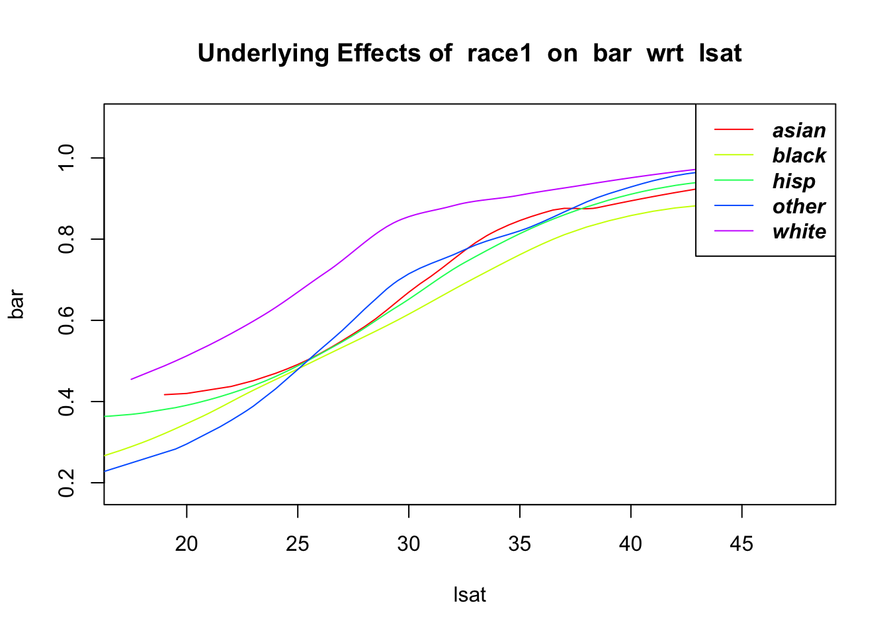

*********************
Latest version of regtools at GitHub.com/matloff
Type ?regtools to see function list by category
Loading required package: qeML
Loading required package: rmarkdown
Loading required package: tufte
*********************
Navigating qeML:
Type vignette("Quick_Start") for a quick overview!
Type vignette("Function_List") for a categorized function list
Type vignette("ML_Overview") for an introduction to machine learning
Attaching package: 'qeML'
The following object is masked _by_ '.GlobalEnv':
evalr
Registered S3 method overwritten by 'GGally':
method from
+.gg ggplot2
data(svcensus)
How do we adjust for confounders? The most common approach involves linear models, with which we express the mean Y for given values of the X, C and S variables in a linear form.
Important term: the regression function
The relation of mean Y to the X, C (or O) and S variables is formally called the regression function of Y on ithose variables. Our first model below, which expreses mean income as a function of age and gender, will assume this relation as linear, but the term regression function is general.
Indeed, one commonality between statistics and machine learning (ML) methods is that both types of analysis typically involve estimation of the regression function, even though they differ in the uses to which they put such estimates: In statistics, the goal can be either effect estimation (e.g. the impact of gender on wages) or prediction, while the latter is almost always the goal of ML.
2.1 Linear model example: a simple gender wage gap analysis
Consider the svcensus data example in Section 1.2 above, investigating a possible gender pay gap. So Y is wage and S is gender. We might treat age as a confounder C, reasoning as follows. Older workers tend to have more experience and thus higher wages, and if there is an age differential in our data, say with female workers tending to be older, this may mask a gender pay gap: If men make more money than women of the same age, but women tend to be old, the gender and age effects may largely cancel out.
So, let’s take the set of confounders C to consist of age, and for simplicity in this introductory example, not include any other confounders, such as occupation, and not include any other variables X.
2.1.1 Initial analysis
Our linear model would thus be
mean W = \(\beta\)0 + \(\beta\)1 A + \(\beta\)2 M
where W is wage, A is age and M is an indicator variable, with M = 1 for men and M = 0 for women. The parameters \(\beta\)i are estimated by fitting the model to the data:
The column svcensus$gender is an R factor. Our function dsldLinear calls R’s lm, which replaces that column by a dummy variable gendermale, our M above. If a factor has f levels, i.e. represents f categories, R will create f-1 dummies.
$gender
(Intercept) age gendermale
31079.9174 489.5728 13098.2091
Let’s use bi to denote our estimated \(\beta\)i. So for instance b1 = 489.5728 is our estimate of the unknown population parameter \(\beta_1\).
The bi are computed using least squares, which find the bi that minimize the sum of the square of the differences between the observed Y and fitted Y.
2.1.2 Interpretation of \(\beta\)2
Lots in the output to discuss, which we will gradually cover below. For now, note that the estimate b2 turns out to be about $13,000, which is the (estimated) wage gap, if any. Here’s why:
Always keep in mind that statistical quantities are only estimated, since we work only with sample data from some population, real or conceptual. Hence the need for standard errors, confidence intervals and so on.
Under the model, the mean wage for, say, 36-year-old men is
\(\beta\)0 + 36 \(\beta\)1 + 1 \(\beta\)2
while for women of that age it is
\(\beta\)0 + 36 \(\beta\)1
The difference is \(\beta\)2. But if we look at, for instance, people of age 43, the mean wages for men and women are
\(\beta\)0 + 43 \(\beta\)1 + 1 \(\beta\)2
and
\(\beta\)0 + 43 \(\beta\)1
and the difference is still\(\beta\)2.
“The” effect of gender
Thus we can speak of \(\beta\)2 as the gender wage gap, at any age. According to the model, younger men earn an estimated $13,000 more than younger women, with the same-sized gap between older men and older women.
The above approach to dealing with confounders is a very common one. But it raises questions, such as:
What are the assumptions underlying that model? And how might we check whether they are (approximately) valid?
We chose only one C variable here, age. We might also include occupation, as noted earlier. In some datasets, might have dozens of possible confounders. How do we choose which ones to use in our model? And for that matter, why not use them all?
The above model, in which the gender wage gap was uniform across all wages, may not be adequate. How can we determine this, and what alternative models might we use?
In addition, the data here are, as is commonly the case, observational, as opposed to being the result of a randomized clinical trial; there may be serious issues, due to unobserved confounders. Such problems might be solvable via an advanced (and rather controversial) methodology known as causal inference. Unfortunately, details are beyond our scope in this tutorial, but we will explain some basic concepts in Section 5.2.
2.1.3 Statistical inference
The full output of dsldLinear() goes to the heart of discrimination analysis, enabling statistical inferences on differences in levels of the sensitive variable S. Let’s take a look, continuing from the above code:
The first half of this output is from lm(), which is called by dsldLinear(). The second half is the “value added” material from dsld.
So, an approximate 95% confidence interval for the gender wage gap is
Since the estimated gender gap here is simply b2, the CI could of course have also been obtained directly from the lm half of the output. But with an S having more than two levels, e.g. race, the dsld enhancement is quite valuable.
13098.2091 ± 1.96 x 790.4451
or (11548.94,14647.48).
2.1.4 With-interactions model
As discussed above, in our model
mean W = \(\beta\)0 + \(\beta\)1 A + \(\beta\)2 M
we identified b2 as the difference in mean wage between men and women, regardless of age, so that for instance:
According to the model, younger men earn about $13,000 more than younger women, with the same-sized gap between older men and older women.
But that may not be true. On the contrary, gender discrimination and age discrimination may interact. It may be, for instance, that the gender gap is small at younger ages but much larger for older people.
Interaction between two types of discrimination is called intersectionality by some analysts.
Technically, the with-interactions model adds a product term:
mean W = \(\beta\)0 + \(\beta\)1 A + \(\beta\)2 M + \(\beta\)3 AM
So for example, the gender pay gap for people of age 36 is
So, this model does indeed allow for interaction between age and gender.
However, this added-product-term is a bit abstract, and it is easier (and approximately equivalent) to simply fit two linear models, one for men and one for women.
Note
The dsldLinear function includes an argument interactions. The default value is FALSE, but if TRUE, it fits separate linear models for each level of S. An additional argument ‘newData’ is now needed, through which the user specifies a data frame consisting of one or more (X,C) values at which to compare the effect of S.
$female
Covariate Estimate StandardError PValue
1 (Intercept) 30551.4302 2123.44361 0
2 age 502.9624 52.07742 0
$male
Covariate Estimate StandardError PValue
1 (Intercept) 44313.159 1484.82216 0
2 age 486.161 36.02116 0
$`Sensitive Factor Level Comparisons`
Factors Compared New Data Row Estimates Standard Errors
1 female - male 1 -13156.88 710.9696
2 female - male 2 -13039.27 710.7782
In setting that newData argument, we need one row for every variable other than Y and S. In this case, there is just one such variable, age. So, in the above call, we are fitting two linear models, one for men and another for women, then comparing regression function values at the two specified ages.
So the gender pay gap is estimated to be -13156.88 at age 36, and -13039.27 at age 43, differing by only about $100. The estimated gap between ages 36 and 53, not shown, is larger, close to $300, but it seems there is not much interaction here. The no-interactions model should be adequate after all.
The classical approach to choosing between the no-interaction and with-interaction models is of course to test the hypothesis \(H_0: \beta_3=0\). As noted earlier and detailed in Section 2.6, modern practice discourages such approaches, which can be misleading.
2.1.5 Linearity and other assumptions
As noted, linear models are ubiquitous in observational data analysis. Open any professional journal in medicine, sociology, economics and so on, and you’ll see many applications of this methodology. But how would one check that most basic assumption, the linearity of the mean Y for given X, C (or O) and S values?
Assumptions–not just a formality
Assumptions matter. They are never perfectly satisfied, but failure to be even approximately valid can mean deciding that there is no discrimination when it actually is there, or vice versa. It can mean bad medication being declared by the government as good, or vice versa. In litigation, if a key expert witness is exposed by opposing counsel as not having checked the assumptions in his/her analysis, the side for which the witness was testifying will likely lose the case on the spot.
Typically, linearity is checked graphically. A common approach involves plotting the residuals, which are the differences between the fitted line and the Y values. Here, though, we use another graphical approach, via a dsld function that may be more informative.
Returning to our earlier setting with just S = gender for our example, we run
The function plots a smoothed graph of Y against a user-specified C variable, once for each level of S. So, the call here says, “Plot smoothed wage income against age, for each gender.”
The function has a ‘conditions’ argument; we have none here, so we just used a trival one, ‘age > 0’
The model has mean Y being a linear of function of age, so we should expect to see approximate straight lines here. Yet the relation certainly looks nonlinear, possibly reflecting age discrimination against both very young and very old workers. We are already investigating one kind of discrimination here, gender, so again for simplicity let’s just keep age as a confounder.
2.1.6 Updated model
But we must do something about the substantial nonlinearity we’ve discovered, and one possible remedy is to add an age2 term be added to the equation:
Adding a squared term does not make our model nonlinear, as it is still linear in the \(\beta\)i; if we, say, double each of those, the entire expression is doubled, the definition of linearity. The model is nonlinear in age but linear in the \(\beta\)i.
mean W = \(\beta\)0 + \(\beta\)1 A + \(\beta\)2 A2 + \(\beta\)3 M
Let’s fit the updated model:
svcensus1$age2 <- svcensus1$age^2z <-dsldLinear(svcensus1,'wageinc','gender')coef(z) # print the estimated coefficients b_i
$gender
(Intercept) age gendermale age2
-104196.65579 7251.30962 15270.56685 -79.16059
So we see that the original wage gap figure of about $13,000 was incorrect; it’s actually estimated to be over $15,000, so the original model underestimated the gap by about 15%.
We see in this example that misspecifying a linear model can have a major impact on its accuracy. As usual, though, we will try to keep things simple, and thus use only the original linear model in our subsequent examples below.
2.1.7 Other assumptions
Other than linearity, the standard errors reported by lm() also assume that variance of wage income is approximately constant across ages and genders. Lack of this property has some effect on the accuracy of reported standard errors, but this can be adjusted via the so-called sandwich operation, an option in dsldLinear().
It is also assumed that wage income has a normal/gaussian distribution at each level, but the Central Limit Theorem’s implication for the sums created by lm() is that the \(b_i\) are in fact approximately normal. The normality assumption is not very important.
2.2 S may consist of more than one factor
In introducing this example, we noted the need to start simple. Let’s move away from that a bit.
In the svcensus data, both age and gender are potential areas of discrimination. We can treat both as such by combining these two R factor variables into one “super R factor,” as follows.
We’ll need to discretize age, and since federal law on age discrimination uses age 40 as the definition of “older,” let’s use that as an example:
We have only three education codes here, with 14 and 16 representing a Master’s degree and 16 a PhD, and ‘zzzOther’ denoting all others. Since this dataset consists of Silicon Valley programmers and engineers, the vast majority of “others” have a Bachelor’s degree.
We no longer need the original age and gender columns, so we’ll delete them and then try some analysis:
Ah, this is a more nuanced probe than the ones above in which we simply used age as a confounder. The male-female differences at both the older and younger age levels, about $9800 and $7800, are both substantial, but smaller than the $13,100 overall figure we obtained earlier.
This is an example of Simpson’s Paradox, in which an overall average effect might be larger than the terms that make up the average. In fact, the algebraic signs may change, as we saw with the UC Berkeley admissionss data in Section 1.1.
Note too the impact of age within genders. Older women made about $8200 more than younger women, but for men the figure was rather larger, about $10,200.
On the other hand, this analysis is probably too coarse with respect to age, as it does not reveal the negative impact of age well beyond 40. It may be worth trying a finer discretization of age, say, 35-, 35-55 and 55+.
2.3 The Logistic model
The logistic model is an example of a generalized linear model, whose name stems from it having a linear component in the formula, as will be seen below.
2.3.1 General form of the model
Just as linear models are the most commonly used for numeric Y, in the binary-Y case the go-to standard is the logistic model. To introduce it, let’s first consider a very simple prediction problem, in which Y is gender, say 1 for male, 0 for female, and X is simply income, using the svcensus data (no C here).
Probability is a special case of a mean
Note that mean Y is now the probability that Y = 1. That’s because the average of a bunch of 1s and 0s is the proportion of 1s. In the data 1,0,1,1 for instance, the mean is (1+0+1+1) / 4 = 3/4, and indeed 3/4 of those numbers are 1s.
Suppose that within each gender, X has a normal (Gaussian) distribution, the familiar “bell-shaped” curve, with the same standard deviation for each gender. Then it turns out that one can show mathematically that
probability male = \[
\frac
{1}{1 + e^{-(\beta_0 + \beta_1 income)}}
\]
The values \(\beta_0\) and \(\beta_1\) actually are expressions involving quantities such as the per-gender mean incomes, but the point is that in the end the probability has a linear component to it, \(\beta_0 + \beta_1 income\).
That formula follows the form of the logistic function, \(f(t) = 1 / [1 + e^{-t}]\), which has the shape of an S-curve:
curve(1/(1+exp(-x)),-4,4)

So at least the model retains a linear component, with much the same interpretability. For instance, if \(\beta_2 > 0\), then the usual monotonicity relation holds, i.e. the higher the income, the greater the probability that the person is male.
The estimates bi of the population values \(\beta_i\) are obtained via a method generalizing the least-squares method used in the linear case.
In the case of multiple predictor variables, the logistic form can again be motivated by considering within-group distributions:
There is a similar situation for the linear case. If Y and the predictor variables have a multivariate normal distribution, one can show that mean Y as a function of the features is linear in the features, etc.
Say we predict gender from age and wage income. If the latter two variables have a bivariate normal distribution (two-dimensional histogram has a 3-D bell shape) with the same variance matrices within each gender, it turns out that we again get a logistic form:
probability male = \[
\frac
{1}{1 + e^{-(\beta_0 + \beta_1 age + \beta_2 income)}}
\]
Now, what about that assumption of the normal distributions and so on? Just as many regression functions for numeric Y in practice are roughly linear, in predicting binary Y the S-curve model is often roughly valid. Moreover, the logistic model has two desirable properties for predicting binary Y:
Its value is between 0 and 1, appropriate for modeling a probability.
As noted earlier, the expression \(1 / [1 + e^{-t}]\) is increasing in t, which we wish to model when our predictors have monotonic relations with Y.
The point is that the logistic (popularly referred to as “logit”) is often a good model for binary-Y settings in general.
2.3.2 We no longer have a no-interactions case
In our earlier linear model, predicting wage income from age and gender,
mean W = \(\beta\)0 + \(\beta\)1 A + \(\beta\)2 M
recall that here \(\beta\)2 has the nice interpretation of there being a uniform gender gap, independent of age. Similar statements hold for \(\beta_1\); a 1-year increase in age, for instance, on average is associated with a \(\beta_1\) increase in mean income, identically for either gender.
Geometrically, if we were to plot separate male and female regression lines against age, the male and female r lines would be parallel. That’s not possible in the logit case, as logit curves cannot be parallel:
The curves are no longer parallel; they even cross. They typically don’t cross in applied settings, but they are always nonparallel.
The implication of this is the same as in the linear case. We cannot speak of “the” impact of S on Y, as it will not be the same at different levels of the X and C variables. So there is no direct analog of the no-interactions case for linear models, in which we could speak of \(\beta_2\) as being “the” gender pay gap.
Some books motivate the logistic approach as the log-odds ratio, meaning in this example that the logarithm of the ratio (probability male) / (probability female) is linear in age and income.
log [probability male / probability female] = \(\beta\)0 + \(\beta\)1 A + \(\beta\)2 W
So here we do have a formulation in which the impact of wage is the same for any age level, albeit on this much less-interpretable log scale.
Note that a log-odds measure can take on any value betwen \(-\infty\) and \(\infty\).
2.3.3 Example: mortgage data
This dataset and its documentation are included in the SortedEffects package. The issue here is whether racism played a role in mortgage denials in the Boston area. As this is a binary outcome, we might consider a logit model.
We have done small modifications, to create R factors for some columns.
So, being Black resulted in an average increase in log-odds of about 0.6409. A 95% confidence interval is 0.6409 \(\pm\) 1.96 x 0.1836 = (0.2810,1.0008). By comparison, being self-employed, for instance, has a similar estimated coefficient of about 0.6355.
2.4 Machine learning approaches
We referred to the quantities \(\beta_i\) above as “parameters.” The linear and logistic models are thus called parametric models. In each case, the regression function is modeled as linear, “S curve-shaped” and so on, that can be described with just a few parameters.
But these models make assumptions, such as assuming the regression function is approximately linear. It would be nice to have available methods that don’t rely on such assumptions.
Machine learning (ML) algorithms typically do not assume the regression function has any particular form. They are thus “safer,” though on the other hand they are less interpretable than, say, that \(\beta_2\) quantity in our no-interactions linear model above. Nor are standard errors available for regression function values at given points.
ML is mainly concerned with prediction, while we here are interested in estimation of effect sizes. However, ML algorithms either directly or indirectly do their prediction by estimating the regression function, as we do here, so they can be quite useful in our context.
2.4.1 The k-Nearest Neighbor algorithm
We’ll focus here on the k-Nearest Neighbor (k-NN) algorithm, as it is the simplest to explain. Say we are predicting people’s weights, knowing only their heights. We have training data, on which we know both the height and weight of each person. Faced with a new case of a person 70.2 inches tall but with unknown weight, we find the people in our training set whose heights are close to 70.2 inches, and average their weights. That average is our predicted weight for the new person, as well as our estimate for the value of the regression function at height = 70.2.
How is “close to” defined? Should we look at the closest 5 people, the closest 50, or what? That number is k, the number of nearest neighbors. It’s chosen by the analyst, just like the analyst chooses the number of bins in plotting a histogram. Typically k is chosen by trying several different values of k, then using the one that best predicts in the holdout set. Once we’ve settled on k, we might use the full dataset, no holdout.
The number k here is called hyperparameter of the algorithms.
The first three arguments are as usual. The fourth states that the ML algorithm we wish to use is kNN; the qeML package also includes random forests, boosting and neural networks. The opts argument states which non-default values we wish to use for arguments to the ML function; the default k actually is 25.
The use of R’s quote function here is due to a nuance in the way R handles nested quotes.
The comparison cases are by default a random sample of 5 rows of the training set. In order to obtain consistent results each time this book is processed by Quarto, we’ve called R’s set.seed function.
It’s important to keep in mind that the output here is not simply for 5 persons; each row represents a subpopulation. Thus for instance in that first row of output, we estimate among all Silicon Valley techies of age 37.4, with a Bachelor’s degree or less, in occupation 101, and having worked 52 weeks, women’s average wage is 48,914 and for men it’s 61,156.
As before, we see a substantial gender wage gap, but now we can feel more confident about it, since this analysis is unencumbered by assumptions on the form of the regression function. On the other hand, as noted, there is no easy way to obtain standard errors.
2.4.2 The random forests algorithm
In the above example, in which we are predicting wage income, a random forests (RF) analysis would generate a large number of decision trees. As explained below, each tree would give us a predicted income, and our final prediction would simply the average of all those predicted values.
So, what is a decision tree? It’s just a flow chart. Consider this example involving vertebral disease. Y is categorical, with values NO (normal), SL and DH. To predict a new case, we look at the X variables (which have the nondescript names V1 through V6) one at a time, and branch through the tree accordingly.
For example, if the new case to be predicted has V6 of at least 16, we branch right, and immediately decide to predict that this patient’s disease status is SL. If on the other hand, V6 is less than 16, we look at V4. If it’s under 28, we immediately predict status DH, and so on.

A decision tree
The order in which variables are considered in building a tree is random for each tree. So, while V6 is considered first in the tree displayed here, in some other tree it may be, say, V2. The split points, e.g. 16 in the root node in the picture, are obtained through formulas that depend on the data in complex (though not terribly deep) ways.
There is no “universally best” predictive algorithm, with performance of a given algorithm being dependent on the given dataset. So, instead of doing a kNN analysis, we could try RF:
Though still indicating a gender wage gap, the results here are rather different from what we obtained with kNN. Which one is better in this particular application? Again, we may decide this on the basis of prediction accuracy (testAcc values) on the holdout set. The RF version looks slightly better, but for full thoroughness, we would need to try different hyperparameter values, and so on. Short of going through all that, the two models are similar.
2.4.3 Other ML methods
The most famous class of ML these days is of course neural networks, especially the refined version deep learning. These have been found highly useful in image recognition and language processing.
In contrast to these fields of application, the ML people refer to the types of data we see in this book, where each row represents, say, one person, as tabular data. Their go-to method for such data is gradient boosting (GB), more specifically XGBoost, accessible in qeML via qeXGBoost. GB is again a tree-based method, but it works by starting with a primitive tree and repeatedly refining it.
2.5 Example: The Law School Admissions dataset
This is the dataset law.school.admissions, included in dsld via fairml. It’s quite well-known in the ML world, but its full provenance is unclear. For instance, the age variable skews far to middle-aged and older, seemingly not consistent with the data’s description on Kaggle.
Possible the ‘age’ variable is birth year. The data are from 1991, so an ‘age’ value of 69 would mean born in 1969, now age 22.
Thus it should be kept in mind that this is just an illustration of methodology, and firm conclusions about the legal education process should not be drawn. The data concern students who were admitted to law school, so in spite of the title, it’s not about the admissions process itself.
The main variables of interest here are:
decile1, decile2: Student’s standing after Year 1 and Year 3 of law school.
fam_inc: Apparently the income level of the family in which the law students was raised in.
lsat: Score on the LSAT, a major law school admissions test.
ugpa: Undergraduate GPA.
gender: Gender.
race1: Primary racial group.
cluster: Level of prestige of the law school.
bar: After law school, did this person pass the bar examination?
There has been concern that the LSAT and other similar tests are biased against Black and Latino students, and might otherwise have racial issues. Let’s investigate, using dsld.
z <-dsldLinear(lsa,'lsat','race1')summary(z)
$`Summary Coefficients`
Covariate Estimate StandardError PValue
1 (Intercept) 31.98578856 0.448435264 0.000000e+00
2 age 0.02082458 0.005841758 3.641634e-04
3 decile1 0.12754812 0.020946536 1.134602e-09
4 decile3 0.21495015 0.020918737 0.000000e+00
5 fam_inc 0.30085804 0.035953051 0.000000e+00
6 ugpa -0.27817274 0.080430542 5.430993e-04
7 gendermale 0.51377385 0.060037102 0.000000e+00
8 race1black -4.74826307 0.198088318 0.000000e+00
9 race1hisp -2.00145969 0.203504412 0.000000e+00
10 race1other -0.86803104 0.262528590 9.449471e-04
11 race1white 1.24708760 0.154627086 6.661338e-16
12 cluster2 -5.10668358 0.119798362 0.000000e+00
13 cluster3 -2.43613709 0.074744210 0.000000e+00
14 cluster4 1.21094567 0.088478368 0.000000e+00
15 cluster5 3.79427535 0.124476695 0.000000e+00
16 cluster6 -5.53216090 0.210750853 0.000000e+00
17 fulltime2 -1.38882076 0.116212777 0.000000e+00
18 barTRUE 1.74973262 0.102818692 0.000000e+00
$`Sensitive Factor Level Comparisons`
Factors Compared Estimates Standard Errors P-Value
1 asian - black 4.748263 0.1980883 0.000000e+00
2 asian - hisp 2.001460 0.2035044 0.000000e+00
3 asian - other 0.868031 0.2625286 9.449471e-04
4 asian - white -1.247088 0.1546271 6.661338e-16
5 black - hisp -2.746803 0.1863750 0.000000e+00
6 black - other -3.880232 0.2515488 0.000000e+00
7 black - white -5.995351 0.1409991 0.000000e+00
8 hisp - other -1.133429 0.2562971 9.764506e-06
9 hisp - white -3.248547 0.1457509 0.000000e+00
10 other - white -2.115119 0.2194472 0.000000e+00
There are very concerning racial differences here. Two very similar people—who attended the same quality law school, with the same undergraduate grades, the same law school grades, even having the same bar passage status—will have LSAT scores differing on average by almost 6 points if one person is Black and the other is white.
Note the retrospective view–using later events to “predict” the past. This is valid, but may seem odd at first.
Again, one must be very cautious in drawing conclusions as to causes, not only because of the questionable quality of the dataset but also because hidden confounders may be at work here. For instance, though we have data on undergraduate GPA, we don’t know the quality of the undergraduate institution. Equally important, we are looking only at those who were admitted to law school; there may be a different pattern in the general population. But the results here raise serious concerns.
2.5.2 Is the bar exam fair?
And what about passage of the bar exam? Does race play a role?
At least judging from the rows labled ‘black - white’, Black and white students having the same traits appear to have passed the bar exam at about the same rates.
We might also do a little check of the appropriateness of the logistic model for this data. One rough approach might be to use dsldConditDisparity(), as we did in the linear case:
# Y needs to be numeric, in this case 0,1lsab <- lsalsab$bar <-ifelse(lsab$bar=='TRUE',1,0)dsldConditDisparity(lsab,'bar','race1','lsat','lsab$age > 0')

Looks pretty good. But we can go further, using k-NN analysis, as it makes no assumptions about the form of the regression function:
w <-dsldML('lsa',quote(bar),'race1',qeMLftnName='qeKNN',opts=list(k=50,yesYVal='TRUE')) print(w)
The pattern here seems to be a bit uneven. Black and white test takers seem to be on par with each other in three cases, but with major differences in the other two rows. We should look at more cases, and revisit the logit analysis, possible checking for quadratic trends..
2.6 Case study: problems with significance testing
In 2016, the American Statistical Association released its first-ever position paper, to warn of the problems of significance testing and “p-values.” Though the issues had been well known for years\(\textemdash\)some journals had even banned the use of p-values in their published research papers\(\textemdash\)it was “significant” that the ASA finally took a stand. Let’s use the law school example in Section 2.5 to illustrate.
There is concern that the LSAT and other similar tests may be heavily influenced by family income, thus unfair, especially to underrepresented minorities. To investigate this, let’s consider the bi, the estimated coefficients in our linear model for the LSAT above.
Review: To test the hypothesis \(H_0: \beta_i = 0\), one computes twice the area to the right of \(|b_i|\) in the standard normal distribution. That number is the significance level, with values under 0.05 being termed significant; 0.01 is the criterion for highly significant, and so on.
In particular, look at the coefficient for family income, 0.3009. The p-value is essentially 0, which in an academic research journal would classically be heralded with much fanfare, termed “very highly significant,” with a 3-star insignia. Indeed, the latter is seen in the output above. (This comes from R, not dlsd.) But actually, the impact of family income is not very large. Here’s why:
Family income in this dataset is measured by quintiles. So this estimated coefficient says that, for example, if we compare people who grew up in the bottom 20% of income with those who were raised in the next 20%, the mean LSAT score rises by only about 1/3 of 1 point\(\textemdash\)a minuscule difference on a test where scores are typically in the 20s, 30s and 40s. The 95% confidence interval (CI), (0.2304,0.3714), again indicates that the effect size here is very small.
Mathematically, testing for a 0 effect is equivalent to checking whether the CI contains 0. But this is missing the point of the CI, which is to (a) give us an idea of the effect size, and (b) to indicate how accurate our estimate is of that size. Aspect (a) is given by the location of the center of the interval, while (b) is seen from the CI’s width
So family income is not an important factor after all, and the significance test was highly misleading.
Some who read this may object, “Sure, there sometimes may be a difference between statistical significance and practical significance. But I just want to check whether my model fits the data.” Actually, it’s the same problem.
For instance, suppose we are considering adding an interaction term between race and undergraduate GPA to our above model. For simplicity, let’s use R’s linear model function, lm(), directly:
w <-lm(lsat ~ .,lsa) # predict lsat from all other variablesw1 <-lm(lsat ~ .+race1:ugpa,lsa) # add interaction summary(w1)
typx <- lsa[1,-5] # set up an example casepredict(w,typx) # estimated regression function value
2
40.2294
predict(w1,typx) # estimated regression function value
2
40.2056
Indeed, the Black and white interaction terms are “very highly significant.” But that does mean we should use the more complex model?
Recall that many ML algorithms, including standard linear regression, use the estimated regression function value as its predicted value. So we see here that adding in term interaction term changed the estimated value of the regession function by only about 0.02 out of a 40.23 baseline. So, we may well prefer the simpler, no-interaction model.
Again, we must not take small p-values literally.
The basic problem with significance testing
The central issue in the above examples, and essentially in any other testing situation, is that the test is not answering the question of interest to us.
We wish to know whether family income plays a substantial role in the LSAT, not whether they is any relation at all, no matter how meaningless. Similarly, we wish to know whether the interaction between race and GPA is substantial enough to include it in our model, not whether there is any interaction at all, no matter how tiny.
The question at hand in research studies is rarely, if ever, whether a quantity is exactly 0, i.e. 0.000… to infinitely many decimal places. Indeed, in most cases our measuring instrument is not this accurate in the first place, and there will always be systemic bias or missingness, unobserved variables and so on, so exact zeroness is not even a meaningful concept.
Thus in almost all cases, significance tests don’t address the issue of interest, which is whether some population quantity is substantial enough to be considered important. Analysts should not be misled by words like “significant.” As noted, modern statistical practice places reduced value, or in the view of many, no value at all, on significance testing.
To be sure, not all statistical professionals are “modern.” Some on the ASA committee that produced the position paper were more reserved on the matter, resulting in the paper not going further than some would have preferred. Nor is modernness necessarily a virtue.
But readers of this book are urged to always keep in mind the two examples above\(\textemdash\)family income and an interaction term each having minuscule impact even though the tests declared them “significant”\(\textemdash\)in conducting future analyses, or assessing the analysis of others.
Instead, form a confidence interval for the quantity of interest. Do not just note whether the CI contains 0. Where is the CI’s center? How wide is it, relative to the accuracy you wish to have? Then make your decision regarding importance of the effect on the basis of the overall situation, not by mechanically performing a test.
2.7 Example: COMPAS dataset
Recall that COMPAS is a tool developed to help judges decide on sentences in criminal trials, which it does by predicting whether the defendant is likely to recidivate. As noted earlier, one study found the tool to be biased against African-Americans; the creator of the tool, Northpointe, disagrees.
Let’s investigate this, by predicting Y = the COMPAS score, with S = race and C = the remaining variables. Does S have much effect on Y?
Y, the decile score, is the risk of recidivism; the larger the value of Y, the greater the risk.
A 95% confidence interval for the mean difference between Black and Caucasian risk scores, holding age, juvenile felony count and so on constant, is 0.4680 \(\pm\) 1.96 x 0.0623 = (0.3459,0.5902). Since the risk of recidivism is given in deciles, the value is 1,2,…,10, we see that the tool does indeed appear to be biased against Black defendants. Though the effect is rather small, around 0.6 of a decile point or less,
and as usual, one must keep in mind the possibility of unseen confounders, it is still a matter of serious concern. Note that the estimated effect of being Blac, 0.4680, is actually larger than the estimated effect of having one additional juvenile felony count, 0.3948.
2.8 Deciding on a set of confounders C
One may have specific confounders in mind for a particular analysis, but it is often unclear as to which to use, or for that matter, why not use them all? This section addresses those issues.
We will address that second question first: Why not use all our variables, other than Y and S, as confounders? We will see that if we have a large number of variables, there is good reason to select only a subset of potential confounders.
How might we do so? We will first recommend some graphical and tabular methods aimed at preliminary exploration toward this end, and then present a dsld function that users may find useful for more systematic selection of confounders.
2.8.1 The problem
The German credit dataset, included in the fairml package and thus with dsld, consists of a total of 21 variables:
Excluding Y = credit risk and S = gender, that gives us 19 variables to choose among for our confounders. Which ones should we use?
Technically, almost any variable is a confounder. The impact may quite minuscule, but through a long chain of relations among many variables, there will usually be at least some connection, though again possibly very faint.
Well, then, why not use them all? That is what we’ve done in our earlier examples. But there are several issues to consider not using the full set of variable,s i.e. every variable other than Y and S:
It may result in overfitting, resulting in large standard errors.
It is unwieldy, difficult to interpret. Many treatments of these issues speak of a desire for a “parsimonious” model.
There is a concern regarding duplication. It may be that, say, some pair of confounders suffices, and adding further confounders does nothing to further clarify discrimination effects.
Concerning this last point: We do not merely have 19 choices for confounders; we must choose from the set of all possible groups of confounders: singletons, pairs, triplets and so on. There are \(2^{19}\) possibilities here, about half a million.
Our specific purpose here is to find a reasonable set of confounders. In essence, that means find variables C such that C is substantially correlated with both Y and S. One way to approach that is to do separate predictions of Y and S, and see which features turn out to predict both well.
2.8.2 Exploratory example: engineering wages
One useful tool here is the function dsldFrequencyByS(), which aims to analyze categorical (not numeric) columns by printing out a list of frequencies. Since education level in the svcensus data is categorical, we can call the function as follows:
Frequency of 102 Frequency of 101 Frequency of 100 Frequency of 141
female 0.3117359 0.2349226 0.3274246 0.04258354
male 0.2016862 0.2203267 0.3433671 0.01923330
Frequency of 140 Frequency of 106
female 0.02587612 0.05745721
male 0.04446055 0.17092610
Notice for instance the difference between the proportion of males in occupation 106 versus females in that same occupation–a difference of approximately 11%. The difference in frequencies here is much greater than with the ‘educ’ example, which suggests using occupation as a confounder. Since different occupations correlate with different wages, it is possible that this gender difference in occupations proportions could be affecting the perceived relationship between gender and wage.
One might consider conducting formal statistical inference in this comparison, calculating a p-value from a chi-square test. But as we saw in Section 2.6. testing for model fit suffers from the same problems as testing for nonzero effects. At any rate, here we are merely doing an exploratory analysis anyway.
2.8.3 Exploratory example: Law school admissions data
Suppose we are investigating the relationships among the variables LSAT score, GPA and race. One way to visualize these relationships would be through dsldScatterPlot3D:
Of course, visualizing a 3-dimensional scatter plog is more challenging than viewing the ordinary 2-dimensional kind. But it does enable richer search for relationships. Here are a few trends suggested by the plot:
This is a plotly interactive graph. To fully understand this function, the reader should execute the function outside of Quarto, i.e. run the above code directly from R. Try try features such as move, rotate, annotation display and so on.
On the fam_inc axis, the lowest quintile of family income is mostly populated by Black and Latino students, while the upper two levels are almost entirely made up of white students.
On the lsat axis, most of those with a lower score happen to be non-white, across all income levels.
The ugpa axis has a similar trend to that of the lsat axis, albeit to a much weaker extent.
Once again, this analysis is merely exploratory, but the graph lends some credence to claims that family income may confound the relationship between race and LSAT score. Note however, that these graphs do not do much to answer the question of whether, in this case, that relationship is substantial. The formal analysis we did earlier indicates that it is not.
Returning to the question of whether race have a substantial impact on exam results, we can look at the density plot of LSAT scores against different races.
Each curve represents the distribution of LSAT scores for one race. The graph suggests the possibility of racial bias in the LSAT. But again, this bias may be confounded.
Recall that the scatter plot also suggested some trend between family income and race. We can investigate this possible relationship by generating another density plot:
White students have larger peaks at income levels 3, 4, and 5, indicating that a larger proportion of white students are in the higher income brackets than non-white students. Conversely, a larger proportion of black and Latino students occupy the lower income bracket levels.
Recall that the fam_inc variable is measured in terms of quintiles, 1 through 5. This is the reason behind the seemingly-odd alignment of, say, the Black and Latino curves.
If we want to investigate other potential confounders, we can call dsldConfounders() with ‘race1’ as our sensitive variable.
This suggests that family income could be confounding the potential relationship between race and LSAT scores. But, as noted, our earlier analysis indicated that the degree of this relationship is very small.
Almost anything is a confounder
Once one accounts for links of two variables, then links of links and so on, virtually everything in practice is a confounder to some degree, so it is up to the analyst to decide when a feature is confounding enough to be considered for inclusion in a model.
2.8.4 Variable selection methodology
The above graphical and tabular approaches may suffice to determine one’s confounders in some applications. We now present more formal, systematic methods.
Many, many approaches to this variable selection or feature selection problem have been proposed over the years. The qeML package includes five of them (see the documentation), and there are myriad others.
A nice overview of such methodology, and implementations in R and Python, are given in Parr et al.
One widely-used method is permutation, which we will use here. To gauge the importance of a variable V in the context of using some ML algorithm, we do two runs through the data, first with the original dataset, and then with the V column changed through a random shuffling of the values in that column. In that second run, our predictive accuracy should be compromised, and the importance measure is taken to be the proportional increase in error rate. The larger the increase, the more important we deem the variable.
2.8.5 The dsldCHunting() function
This function serves as an aid to selecting confounders, using the permutation-based computation in the randomForests package.
Its operation is best described by example, which we will present next. Before reading it, though, recall that we are interested in finding variables that are correlated with, i.e. predict well, both Y and S.
The importance measures are printed out (the ranking is what matters), followed by the “top-i” sets in common.
For instance, the variables (excluding S) that predict Y well are first p_irat, then denpmi and so on. In predicting S, excluding Y, the best are p_irat, then loan_val et cetera.
Since we are focusing on variables that are correlated with both Y and S, we take the intersection. For example, the intersection of the top three Y predictors and top three S predicts is p_irat and loan_val.
As usual, there are no magic formulas to use here. The analyst is given a choice. One might use just the top two confounders, or the top three and so on.
2.8.7 Example: Employer bias test
In the paper “Are Emily and Greg More Employable Than Lakisha and Jamal? A Field Experiment on Labor Market Discrimination” (Am. Econ. Rev., Sept. 2004), researcher “test” employers by sending CVs with “white-sounding” and “Black-sounding” names, checking for bias. Did employers call “whites” more often than “Blacks” for an interview? The resulting data is lak in dsld.
We’ll take Y to be call, which records whether the “applicant” received a call back in response to submitting the CV. S will be race, which now leaves us with 63 - 2 = 61 potential confounders!
Actually, it’s even worse. Many rows of the dataset contain missing values (coded NA in R). The version here uses only intact rows, of which there are 447. (The original data had 4870 rows.) A rough rule of thumb commonly cited in statistics is that in regression estimation, the number of features should be less than the square root of the number of data points; by this or almost any other measure, 61 predictors is well beyond the capacity of 447 data points. And, as noted, that number of variables is unwieldy. Let’s see what we can do to reduce that.
We are seeking variables that are correlated both with Y and S, yet there appear to be many that correlate with just one of these. That’s to be expected for datasets having a large number pf variables. But still, in the end we see a few that meet our goals.